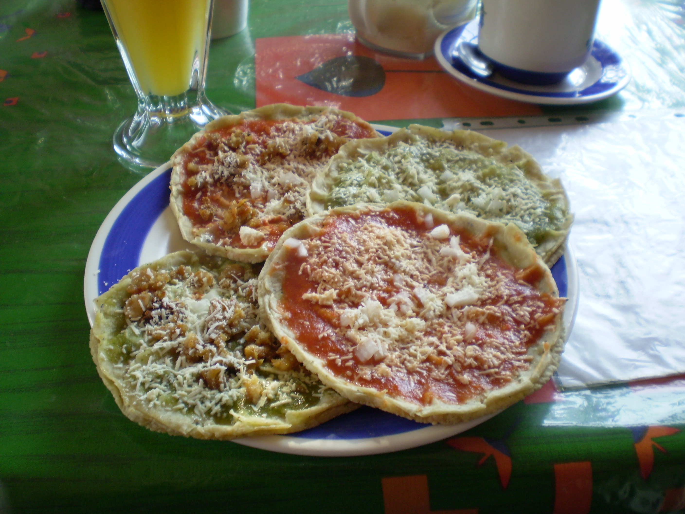

Sopes are thick, savory corn cakes made from masa (corn dough) that feature a unique, hand-pinched rim designed to hold an array of delicious toppings. The dough is first pressed into thick rounds, cooked briefly on a dry griddle (comal) to seal the shape, and then the edges are pinched upwards while still hot to form a shallow boat. Lightly fried just before serving to add a delicate exterior crunch, they are traditionally layered with warm refried beans, shredded meats, crumbled cheese, lettuce, and salsa for a perfect handheld meal.